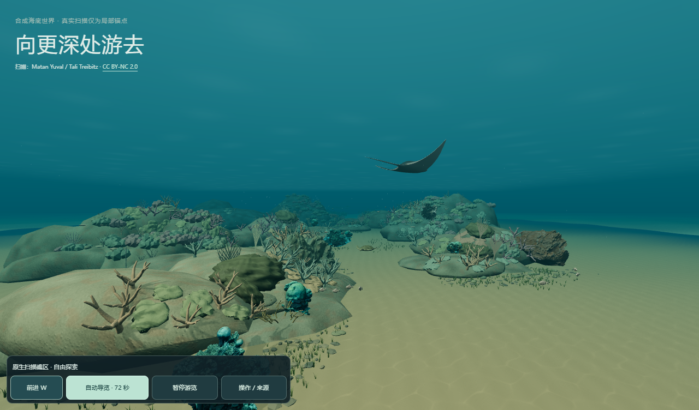
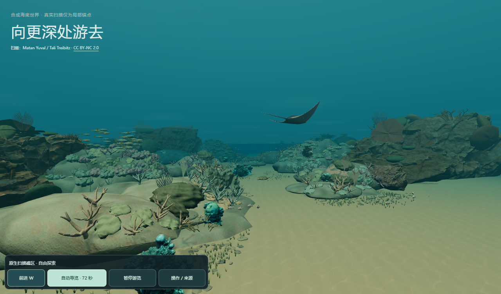
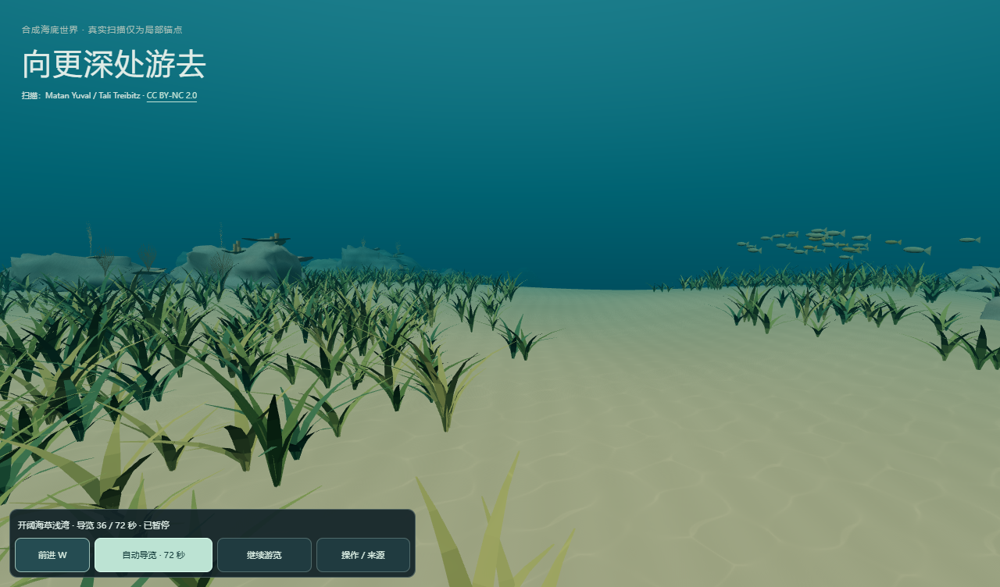
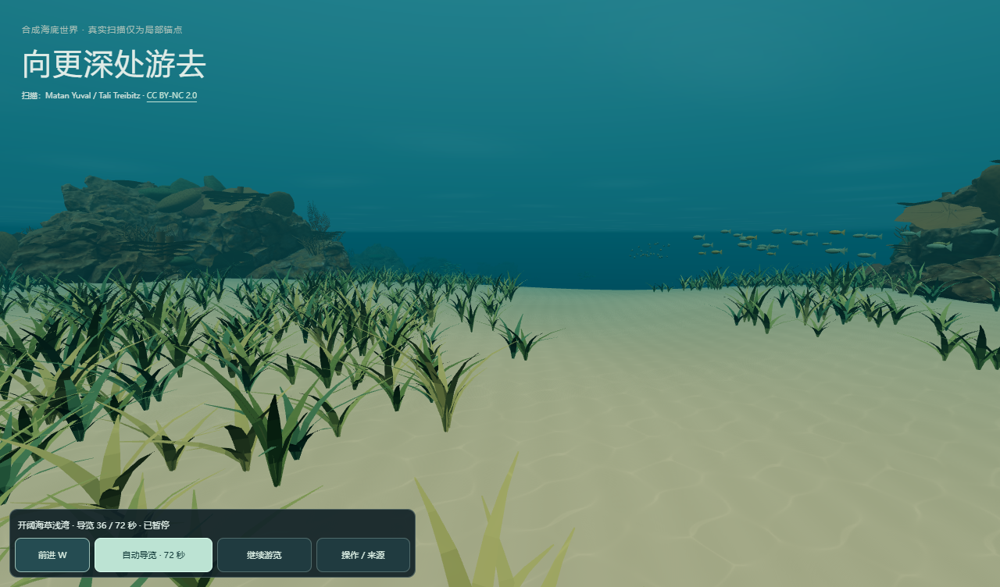
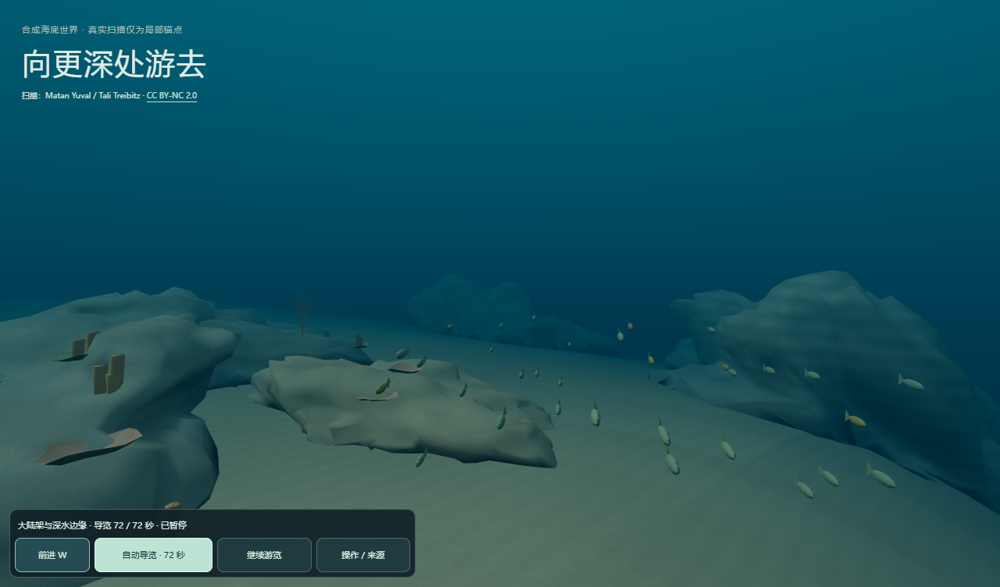
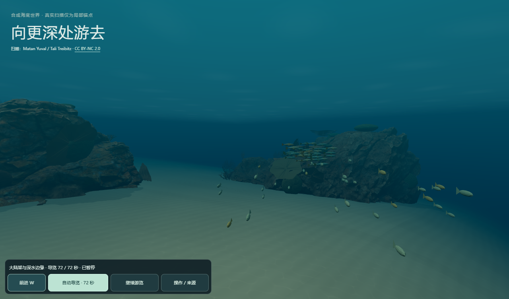
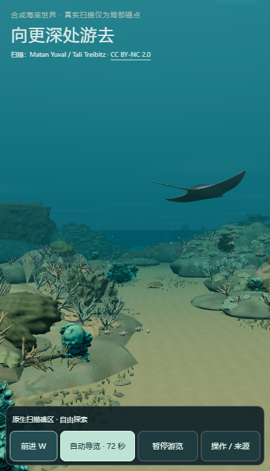

连续海域候选：看真实渲染
这是本机 Chrome / Intel UHD 的实际 PNG 和原速录像。三个固定视角保持相同相机、同样视口。独立候选未覆盖线上入口，真实感仍待最终审查。
进入本地可漫游候选 · 浏览器核验报告 · 源码、范围与局限
入口

稳定 enriched 原始渲染
连续礁脊候选海草湾中程

稳定 enriched 原始渲染
连续礁脊候选深水边缘

稳定 enriched 原始渲染
连续礁脊候选真实自然导览与自由操作
从实际加载、按钮启动到 72 秒完成，随后重播暂停、转身、返回和碰撞。没有快进、注入时钟或跳站。窄屏另外核验。
移动端模拟与限制

390×740、触控和减少动态效果模拟通过。尚未测试实体手机性能。海草和部分群落仍明显程序化，岩体复用同一许可源；回望原区域的空边界仍在。本候选有整体纵深增量，但不能把功能通过当作最终真实感验收。